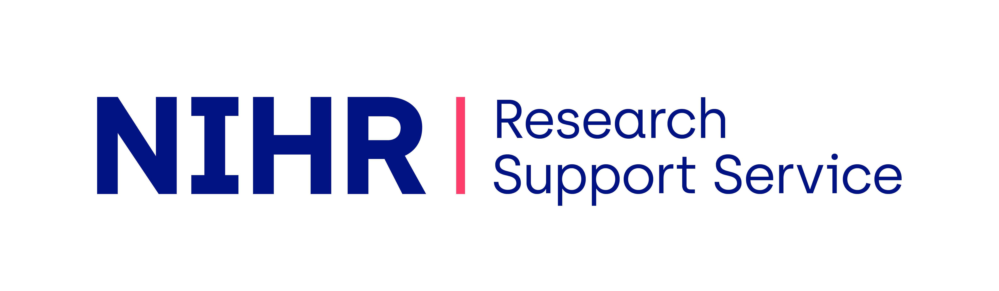

Access the resources and services available through the RSS platform. Please select an option below to continue.
Explore the global map of institutions and relevant RSS activity.
Explore the RSS services, support and resources available to you.
Find guidance and information for SMEs engaging with RSS support.